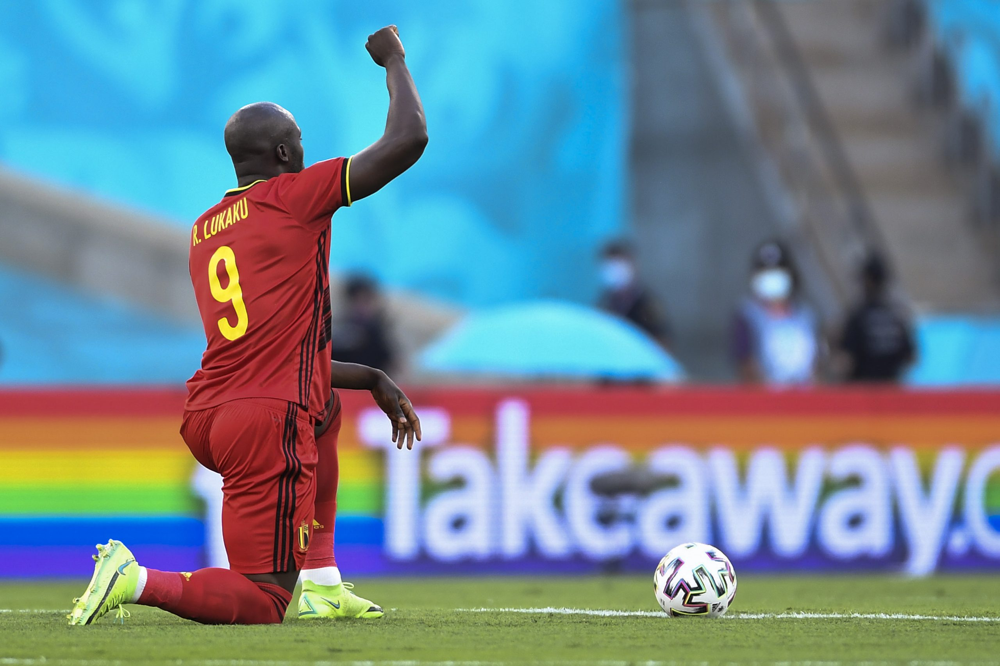
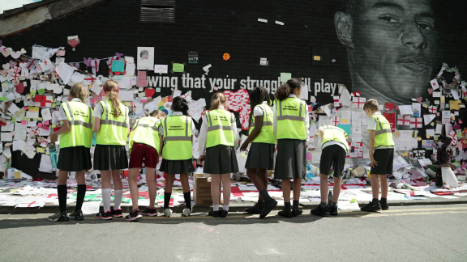
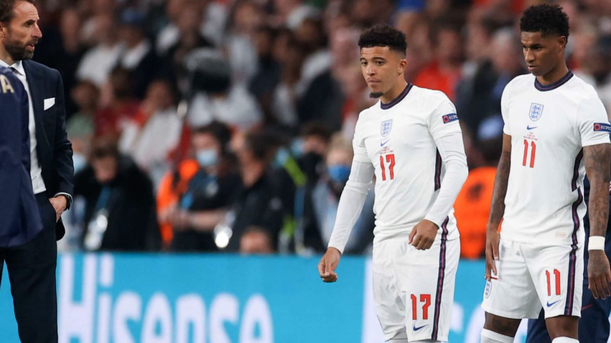
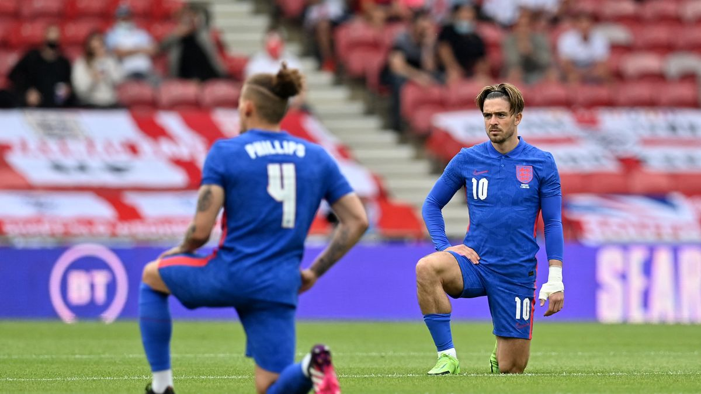

(CNN) - In an exclusive interview with CNN Sport, Chelsea striker Romelu Lukaku has urged the CEOs of social media companies to sit down with leading Premier League stars to try and put an end to the abuse that footballers receive online.
Platforms such as Facebook and Twitter have implemented several new measures in recent months, such as being able to limit who can respond to posts, but star players in both the men's and women's game still regularly find themselves subjected to racist, sexist and homophobic abuse, as well as death threats.
This issue is personal for Lukaku, who has been targeted by racist fans in the past, and the Belgian international explains why he wants to be more directly involved.
"I have to fight," he told CNN's Amanda Davies. "Because I'm not fighting only for myself. I'm fighting for my son, for my future kids, for my brother, for all of the other players and their kids, you know, for everybody."
Lukaku believes it's now time for all parties -- footballers, social media companies and governing bodies -- to come together and take on the responsibility of ending the abuse.
"The captains of every team, and four or five players, like the big personalities of every team, should have a meeting with the CEOs of Instagram and governments and the FA and the PFA, and we should just sit around the table and have a big meeting about it," Lukaku says.
"How we can attack it straight away, not only from the men's game, but also from the women's game.
"I think just all of us together and just have a big meeting and have a conference and just talk about stuff that needs to be addressed to protect the players, but also to protect fans and younger players that want to become professional footballers."
READ: Romelu Lukaku says racism in football is at an 'all-time high'
 Romelu Lukaku: Racism in football is at an all-time high 02:37'Football is joy'
Lukaku was speaking to CNN Sport around the launch of Chelsea's 'No To Hate' photography competition, which is encouraging fans of the club around the world to send in their photos that show the diversity within the Chelsea community and how football can be a unifying factor against hatred and discrimination in any form.
The 'No To Hate' campaign was originally launched back in March by Chelsea owner Roman Abramovich following the "disgusting and unacceptable racist abuse" Chelsea defender Reece James received in January.
Lukaku has often received racist abuse on the pitch throughout his career, notably during his time with Inter Milan in Italy, and recently told CNN that he believes racism in football is at an "all-time high."
However, he says the constant fight against racism is not one he will ever grow weary of.
"At the end of the day, football should be an enjoyable game," he said. "You cannot kill the game by discrimination. That should never happen.
"Football is joy, it's happiness and it shouldn't be a place where you feel unsafe because of the opinion from some uneducated people."
A spokesperson for the Football Association (FA) told CNN that it has contacted Chelsea directly to arrange a discussion with Lukaku. "We always welcome conversations on this important subject with players and others across the game," the spokesperson said.
Similarly, the Professional Footballers' Association (PFA) has reached out to Lukaku through Chelsea captain César Azpilicueta to try and organize a meeting and find out how they can better work together.
The Premier League says it will also be contacting Romelu Lukaku as it would "like to hear more about what he thinks about these issues," and also inform him about some of the initiatives they already have up and running.
 These children are learning about an issue long considered taboo in Britain 02:47Lukaku points to the collective spirit in the football world that managed to "stop the Super League in one day" and questions why that same fervor can't be applied to eradicating abuse from social media platforms.
"If you want to stop something, you can really do it," he says. "We as players, we can say: 'Yeah, we can boycott social media,' but I think it's those companies that have to come and talk to the teams, or to the governments, or to the players themselves and find a way how to stop it because I really think they can."
Back in January, key football authorities and governing bodies, including Kick It Out, PFA, Premier League and The FA, met with social media companies to discuss how to tackle online hate.
Between January and March of this year, Facebook removed more than 33 million pieces of hate speech from its platforms, which also include Instagram, with more than 93% of it removed before it had been reported.
"No one should have to experience racist abuse anywhere, and we don't tolerate it on Facebook and Instagram," a Facebook spokesperson told CNN. "We remove racist content as soon as we see it and respond to valid legal requests to help with police investigations.
"We've also built the Hidden Words tool to prevent people from seeing this abuse in their comments and in DMs and encourage everyone to use it. People can also limit comments and DM requests during spikes of increased attention.
"No one thing will fix this challenge overnight, but we're committed to continuing our work with the Premier League and others to help keep our community safe from abuse."
In its response to CNN, a Twitter spokesperson pointed to a blog post published on their website on August 10.
"We condemn racism in all its forms -- our aim is to become the world's most diverse, inclusive, and accessible tech company, and lead the industry in stopping such abhorrent views being seen on our platform," the statement read.
"We were appalled by those who targeted players from the England football team with racist abuse following the Euro 2020 Final.
"While our automated tools are now able to detect a majority of the abusive Tweets we remove, we also continue to take action from reports."
 Lewis: Racism toward England players a source of national shame 03:20'Football is joy'
In recent years, incidents of racism among Chelsea supporters has, at times, led to the fan base being tarred with the same brush.
Lukaku says campaigns such as 'No To Hate' are an important way to show the world that the larger Chelsea community stands against all forms of discrimination.
"I think right now, from the owner to us, the players, we as a club ... we are really putting out a statement and taking a position that stuff like that should not be tolerated," Lukaku says.
"Because, in our team, we have a lot of players that represent the club from different nationalities, different skin colors, different religions, also the women's team where it's the same thing.
"So I think us as a club, I think we should be an example for the other teams and basically say that, you know, whenever a form of discrimination is happening, that the club is taking a strong position and prosecuting everything that's happening in the stands."
Lukaku rejoined Chelsea in the Premier League this summer, at a time when certain teams and players are still taking the knee before matches in a united stance against discrimination.
However, the Belgian forward believes more can be done and questions the effectiveness of the gesture.
"I think we can take stronger positions, basically," he said. "Yeah, we are taking the knee, but in the end, everybody's clapping but ... sometimes after the game, you see another insult."
 Why England players taking the knee is proving so divisive 03:12His sentiments were echoed recently by Chelsea teammate Marcos Alonso, who said the act of taking the knee is "losing a bit of strength" and is instead deciding to stand and point to the anti-racism message on his sleeve.
Similarly, Chelsea Women's player Jess Carter told CNN that she has started to question why players are continuing to take the knee and whether it is becoming something of an empty gesture.
"It shows, of course, that unity, that we're all still standing and supporting something," she explains. "But at times, I'm kind of like: 'Are people just doing this for the sake of doing it now? Are you just doing it because of your manager [who] said you should probably take the knee so you don't get abused on social media?'
"Part of me is still kind of like: 'What are we doing it for?' I'm glad that we are trying to stay united and show that there is diversity in this game and it should be here. We've got five seconds before a game to try and give a powerful message -- and what else could we do?
"I'm glad that we do it, but are we just continuing it for the sake of doing it or are we continuing it because it matters? That's, for me, the difference and when we stop taking the knee, then what's next? Because racism, homophobia, everything is not just going to go away. So what are we going to continue to do after the knee stopped?"